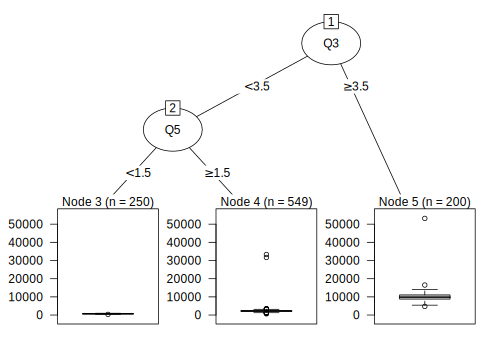
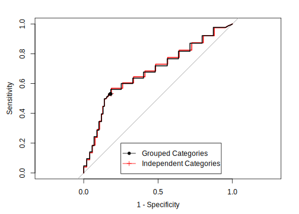

11.4 Regression and Decision Tree Basic
11.4.1 Regression Tree
Let’s look at the process of building a regression tree (Gareth James and Tibshirani 2015). There are two steps:
- Divide predictors space — that is a set of possible values of \(X_1,X_2,\dots,X_p\)— into \(J\) distinct and non-overlapping regions: \(R_1,R_2,\dots,R_J\)
- For every observation that falls into the region \(R_j\), the prediction is the mean of the response values for the training observations in \(R_j\)
Let’s go back to the previous baby example. If we use the variable “Gender” to divide the observations, we obtain two regions \(R_1\) (female) and \(R_2\) (male).

y1 <- c(156, 167, 165, 163, 160, 170, 160)
y2 <- c(172, 180, 176)The sample average for region \(R_1\) is 163, for region \(R_2\) is 176. For a new observation, if it is female, the model predicts the height to be 163, if it is male, the predicted height is 176. Calculating the mean is easy. Let’s look at the first step in more detail which is to divide the space into \(R_1, R_2, \dots, R_J\).
In theory, the region can be any shape. However, to simplify the problem, we divide the predictor space into high-dimensional rectangles. The goal is to divide the space in a way that minimize RSS. Practically, it is nearly impossible to consider all possible partitions of the feature space. So we use an approach named recursive binary splitting, a top-down , greedy algorithm. The process starts from the top of the tree (root node) and then successively splits the predictor space. Each split produces two branches (hence binary). At each step of the process, it chooses the best split at that particular step, rather than looking ahead and picking a split that leads to a better tree in general (hence greedy).
\[R_{1}(j, s)=\{X|X_j<s\}\ and\ R_{2}(j, s)=\{X|X_j\geq s\}\]
Calculate the RSS decrease after the split. For different \((j,s)\), search for the combination that minimizes the RSS, that is to minimize the following:
\[\Sigma_{i:x_i\in R_1(j,s)}(y_i-\hat{y}_{R_{1}})^2+\Sigma_{i:x_i\in R_2(j,s)}(y_i-\hat{y}_{R_{2}})^2\]
where \(\hat{y}_{R_1}\) is the mean of all samples in \(R_1\), \(\hat{y}_{R_2}\) is the mean of samples in \(R_2\). It can be quick to optimize the equation above. Especially when \(p\) is not too large.
Next, we continue to search for the split that optimize the RSS. Note that the optimization is limited in the sub-region. The process keeps going until a stopping criterion is reaches. For example, continue until no region contains more than 5 samples or the RSS decreases less than 1%. The process is like a tree growing.

There are multiple R packages for building regression tree, such as ctree, rpart and tree. rpart is widely used for building a single tree. The split is based on CART algorithm, using rpart() function from the package. There are some parameters that controls the model fitting, such as the minimum number of observations that must exist in a node in order for a split to be attempted, the minimum number of observations in any leaf node etc. You can can set those parameter using rpart.control.
A more convenient way is to use train() function in caret package. The package can call rpart() function and train the model through cross-validation. In this case, the most common parameters are cp (complexity parameter) and maxdepth (the maximum depth of any node of the final tree). To tune the complexity parameter, set method = "rpart". To tune the maximum tree depth, set method = "rpart2" :
dat <- read.csv("http://bit.ly/2P5gTw4")
# data cleaning: delete wrong observations
dat <- subset(dat, store_exp > 0 & online_exp > 0)
# use the 10 survey questions as predictors
trainx <- dat[, grep("Q", names(dat))]
# use the sum of store and online expenditure as response variable
# total expenditure = store expenditure + online expenditure
trainy <- dat$store_exp + dat$online_exp
set.seed(100)
rpartTune <- train(trainx, trainy,
method = "rpart2",
tuneLength = 10,
trControl = trainControl(method = "cv"))
plot(rpartTune)
RMSE doesn’t change much when the maximum is larger than 2. So we set the maximum depth to be 2 and refit the model:
rpartTree <- rpart(trainy ~ ., data = trainx, maxdepth = 2)You can check the result using print():
print(rpartTree)## n= 999
##
## node), split, n, deviance, yval
## * denotes terminal node
##
## 1) root 999 1.581e+10 3479.0
## 2) Q3< 3.5 799 2.374e+09 1819.0
## 4) Q5< 1.5 250 3.534e+06 705.2 *
## 5) Q5>=1.5 549 1.919e+09 2326.0 *
## 3) Q3>=3.5 200 2.436e+09 10110.0 *You can see that the final model picks Q3 and Q5 to predict total expenditure. To visualize the tree, you can convert rpart object to party object using partykit then use plot() function:
rpartTree2 <- as.party(rpartTree)
plot(rpartTree2)
11.4.2 Decision Tree
Similar to a regression tree, the goal of a classification tree is to stratifying the predictor space into a number of sub-regions that are more homogeneous. The difference is that a classification tree is used to predict a categorical response rather than a continuous one. For a classification tree, the prediction is the most commonly occurring class of training observations in the region to which an observation belongs. The splitting criteria for a classification tree are different. The most common criteria are entropy and Gini impurity. CART uses Gini impurity and C4.5 uses entropy.
When the predictor is continuous, the splitting process is straightforward. When the predictor is categorical, the process can take different approaches:
- Keep the variable as categorical and group some categories on either side of the split. In this way, the model can make more dynamic splits but must treat the categorical predictor as an ordered set of bits.
- Encode the categorical variable to be a set of dummy variables. In this way, the information in the categorical variable is decomposed to independent bits of information. The model considers these dummy variables separately and evaluates for each of these on one split point (because there are only two possible values: 0/1).
When fitting tree models, people need to choose the way to treat categorical predictors. If you know some of the categories have higher predictability, then the first approach may be better. In the rest of this section, we will build tree models using the above two approaches and compare them.
Let’s build a classification model to identify the gender of the customer:
dat <- read.csv("http://bit.ly/2P5gTw4")
# use the 10 survey questions as predictors
trainx1 <- dat[, grep("Q", names(dat))]
# add a categorical predictor
# use two ways to treat categorical predictor
# trainx1: use approach 1, without encoding
trainx1$segment <- dat$segment
# trainx2: use approach 2, encode it to a set of dummy variables
dumMod <- dummyVars(
~.,
data = trainx1,
# Combine the previous variable and the level name
# as the new dummy variable name
levelsOnly = F
)
trainx2 <- predict(dumMod, trainx1)
# the response variable is gender
trainy <- dat$genderHere we use train() function in caret package to call rpart to build the model. We can compare the model results from the two approaches:
CART
1000 samples
11 predictor
2 classes: 'Female', 'Male'
No pre-processing
Resampling: Cross-Validated (10 fold)
Summary of sample sizes: 901, 899, 900, 900, 901, 900, ...
Resampling results across tuning parameters:
cp ROC Sens Spec
0.00000 0.6937 0.6517 0.6884
0.00835 0.7026 0.6119 0.7355
0.01670 0.6852 0.5324 0.8205
0.02505 0.6803 0.5107 0.8498
0.03340 0.6803 0.5107 0.8498
......
0.23380 0.6341 0.5936 0.6745
0.24215 0.5556 0.7873 0.3240
ROC was used to select the optimal model using the largest value.
The final value used for the model was cp = 0.00835.The above keeps the variable as categorical without encoding. Here cp is the complexity parameter. It is used to decide when to stop growing the tree. cp = 0.01 means the algorithm only keeps the split that improves the corresponding metric by more than 0.01. Next, let’s encode the categorical variable to be a set of dummy variables and fit the model again:
rpartTune2 <- caret::train(
trainx2, trainy, method = "rpart",
tuneLength = 30,
metric = "ROC",
trControl = trainControl(method = "cv",
summaryFunction = twoClassSummary,
classProbs = TRUE,
savePredictions = TRUE)
)Compare the results of the two approaches.
rpartRoc <- pROC::roc(response = rpartTune1$pred$obs,
predictor = rpartTune1$pred$Female,
levels = rev(levels(rpartTune1$pred$obs)))
rpartFactorRoc <- pROC::roc(response = rpartTune2$pred$obs,
predictor = rpartTune2$pred$Female,
levels = rev(levels(rpartTune1$pred$obs)))
plot.roc(rpartRoc,
type = "s",
print.thres = c(.5),
print.thres.pch = 3,
print.thres.pattern = "",
print.thres.cex = 1.2,
col = "red", legacy.axes = TRUE,
print.thres.col = "red")
plot.roc(rpartFactorRoc,
type = "s",
add = TRUE,
print.thres = c(.5),
print.thres.pch = 16, legacy.axes = TRUE,
print.thres.pattern = "",
print.thres.cex = 1.2)
legend(.75, .2,
c("Grouped Categories", "Independent Categories"),
lwd = c(1, 1),
col = c("black", "red"),
pch = c(16, 3))
In this case, the two approaches lead to similar model performance.
Single tree is straightforward and easy to interpret but it has problems:
- Low accuracy
- Unstable: little change in the training data leads to very different trees.
One way to overcome those is to use an ensemble of trees. In the rest of this chapter, we will introduce three ensemble methods (combine many models’ predictions): bagging tree, random forest, and gradient boosted machine. Those ensemble approaches have significant higher accuracy and stability. However, it comes with the cost of interpretability.